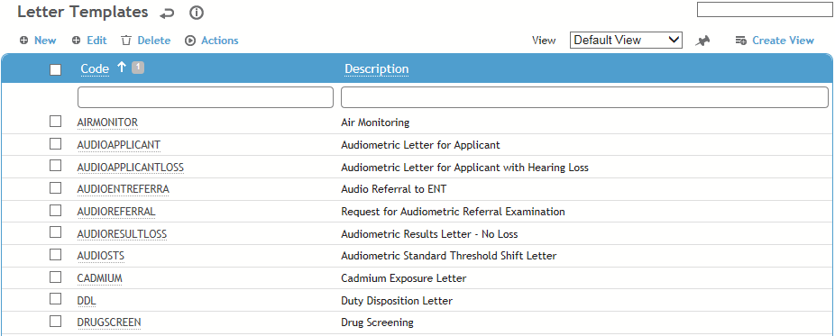
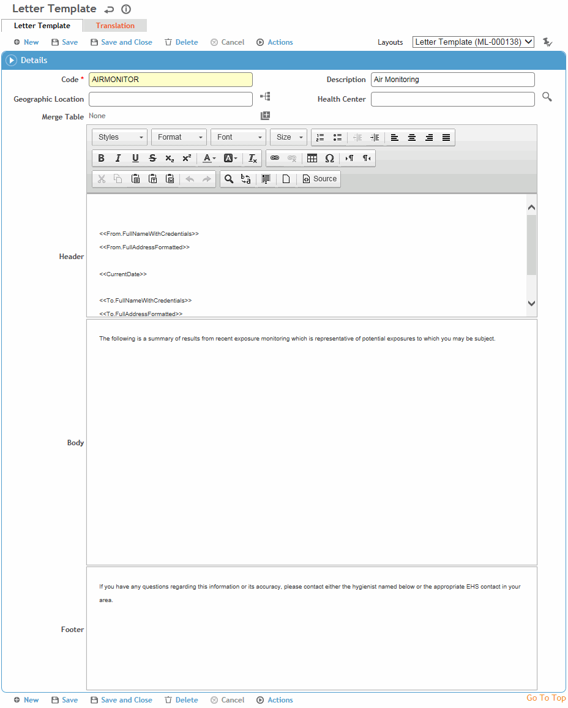

To filter the list of records, enter a few characters in one or more of the fields at the top followed by an asterisk, then press Enter.

Click a link to edit, or click New.

Enter a Code and Description for the letter.
Select the Geographic Location and Health Center.
To have picklists for this table only show values corresponding to the user’s geographic location, ensure the "Filter Look-up Tables by Geographic Location" system setting is enabled.
Select the Merge Table that contains fields you want to include.
This can include electronic signatures defined in the Employee Signature or Staff Signature field, or Report Writer subqueries from modules that you have access to. When a table from a Report Writer subquery is added to a generated letter, the first 50 rows of report results are added. The order of the rows depends on the sorting defined for the subquery. Up to 15 columns are supported. If the subquery criteria includes the Is Recipient operand, the table will only include data that pertains to the employee for whom the letter is generated.
If the subquery criteria includes an ID field with the “Equals Main Record ID” operand, the letter will only include data related to the record the letter is sent from.
Optionally, enter a Subject line. You can include merge fields as described below.
Enter the text of the letter:
-
The formatting options are similar to those in Microsoft Word.
-
Wherever you want to insert data from a record, place your cursor in the appropriate section (email body, header, body, or footer), click the “add” icon
 , and select the field(s) from the tree. The field name will appear surrounded by brackets, but in the real letter will be replaced with the value of the field from the record.
, and select the field(s) from the tree. The field name will appear surrounded by brackets, but in the real letter will be replaced with the value of the field from the record. -
If the merge table includes the Practitioner node, and the Practitioner.Signature merge field is added to the letter, an image of the practitioner’s electronic signature will display.
Click Save.